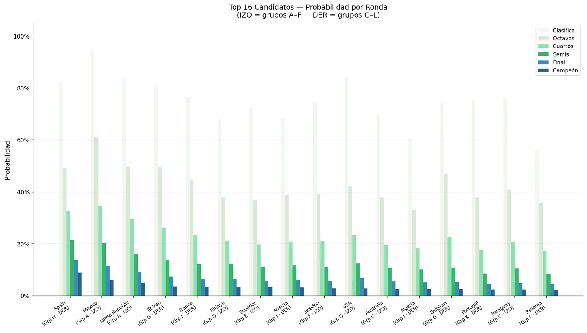
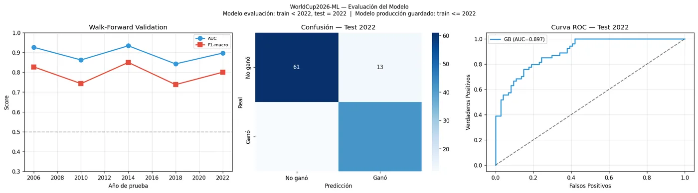
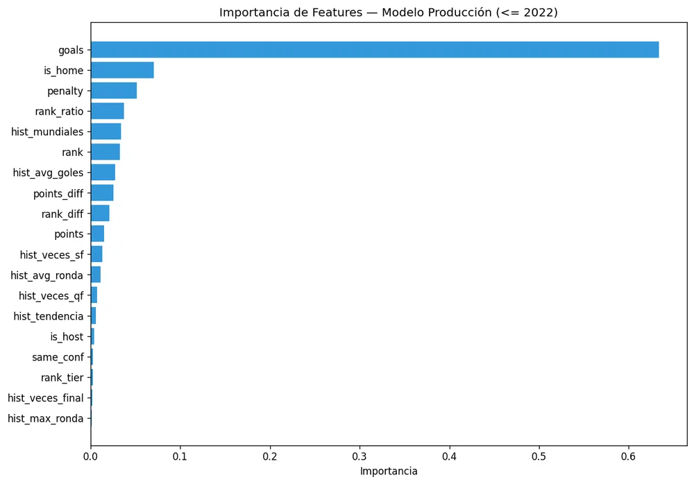

Un modelo que predice cada partido y simula el torneo completo 10.000 veces para estimar la probabilidad de cada selección de llegar a cada ronda. Antes del Mundial tenía a España como la favorita número 1.
España ganó el Mundial 2026 al vencer 1-0 a Argentina en la final. Así se comparan las probabilidades del modelo, calculadas antes del torneo, con lo que pasó:
| Selección | Ranking del modelo | Prob. campeón | Resultado real |
|---|---|---|---|
| España | #1 | 9,0% | Campeón |
| Argentina | #45 | 0,4% | Finalista |
| Francia | #5 | 3,6% | Semifinal |
| Inglaterra | #17 | 2,1% | Semifinal |
El acierto: el modelo identificó al campeón como su máximo favorito, y a Francia entre sus cinco primeros.
El error: subestimó por completo a Argentina. Una lectura probable es que el modelo pesa mucho el historial agregado y el ranking, y no capta el momento de un equipo ni la calidad individual de su plantilla. Ese es el siguiente paso para mejorarlo.
Una probabilidad del 9% para el favorito es normal en un torneo de 48 equipos: incluso el mejor equipo tiene más chances de no ganar que de ganar. El valor del modelo está en ordenar bien a los candidatos.

Usé validación walk-forward: cada mundial se predice entrenando solo con los anteriores, igual que pasaría en la vida real. Así se evita que el modelo "vea el futuro".

